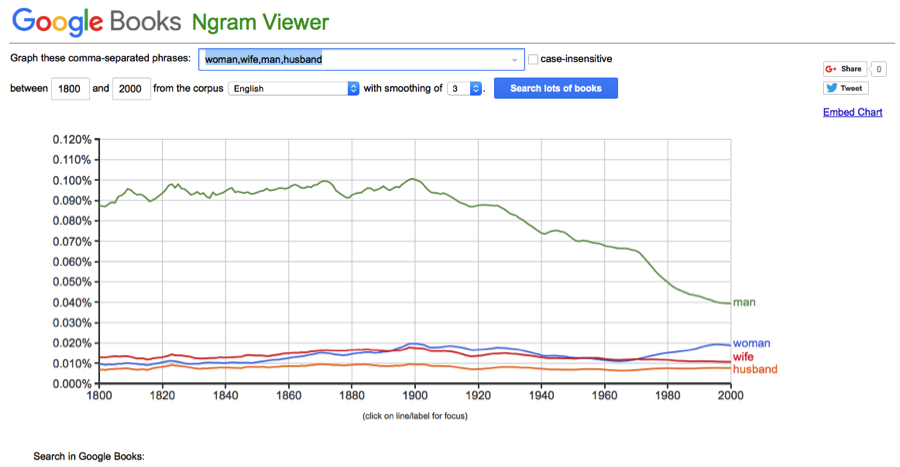
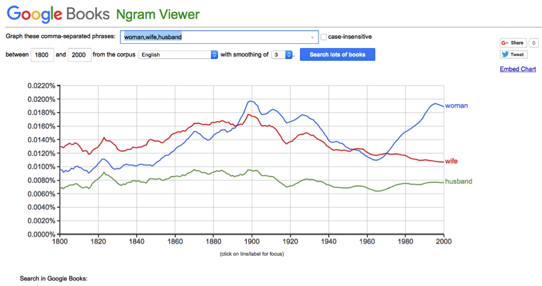

How did word usage change over time?
by Brian McKean, Kari Santos, Tristan Wagar
Source Code
Google NGram: How does the relationsip between man-husband compare to woman-wife 
Google NGram2: Looks like man is quite different, just husband compared to woman-wife. While wife has declined, husband has been relatively constant 